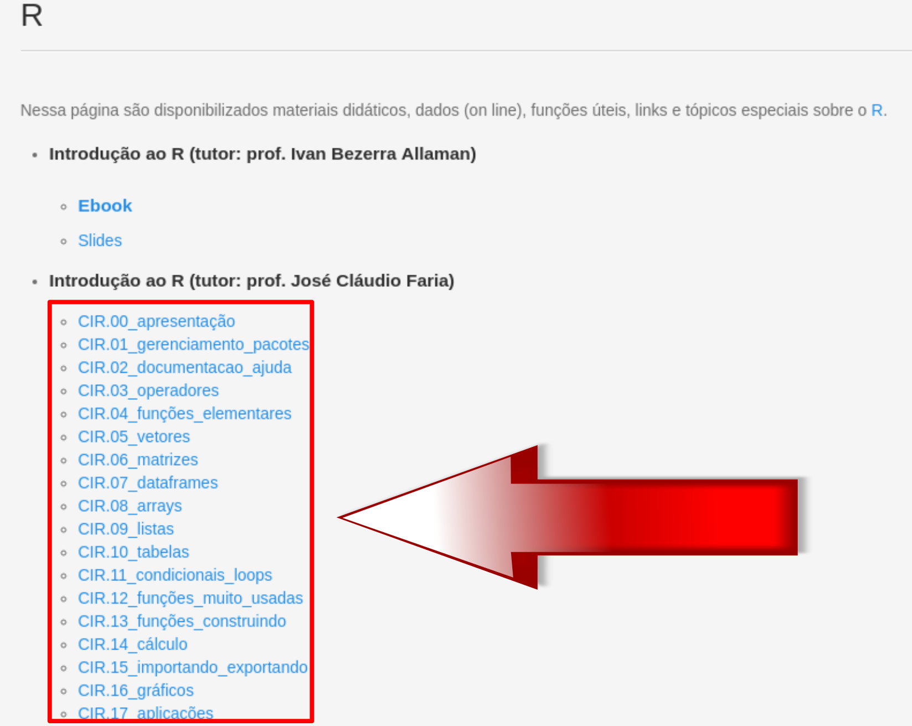
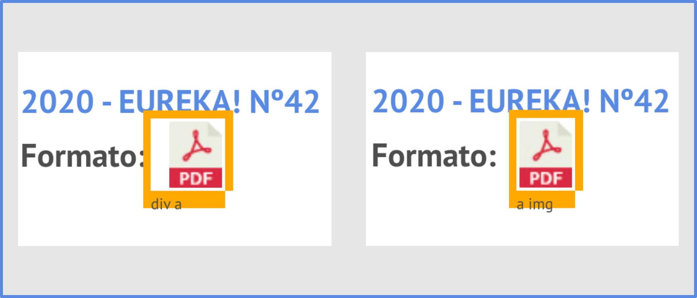

Para facilitar nossa vida!
Antes de iniciarmos nossos códigos, nunca é demais salientar que esse texto trata-se de uma introdução. Coletar dados da web pode ser uma tarefa realmente árdua e desafiadora, pois os sites podem dificultar o acesso de diversas formas.
Abordaremos situações simples, onde o web scraping realmente é usado como uma ferramenta para aumentar a produtividade do professor, reduzindo seu tempo em muitas situações que frequentemente aparecem na vida profissional.
Uma outra coisa impotante, antes de iniciarmos a prática, é sempre termos em mente que nossos códigos são estabelecidos em certo momento temporal, ou seja, o código funciona “naquele momento” e esperamos que continue assim.
Mas, sites podem mudar e, consequentemente, o nosso código pode “quebrar”. Por isso, dependendo da época em que você esteja lendo esse texto, as coisas podem estar bem diferentes. A idéia é você entender os fundamentos e aplicar numa situação particular que deseja.
Quando usamos um programa para extrair dados de um site, estamos fazendo requisições ao servidor daquele site. Obviamente, muitas requisições podem tornar lento um site e isso não é desejado por seus mantenedores.
Essa é uma das razões para que alguns sites restrinjam o acesso em determinada área, ou da totalidade do site!
Por isso, conhecer as permissões de cada site é importantíssimo numa possível “raspagem” de dados.
Sempre leia as permissões do site, antes de iniciar qualquer atividade de web scraping.
Uma das formas de sabermos se um site permite a raspagem é verificando os robots.txt.
Para isso, na url de cada site, ao final da mesma, digite: “/robots.txt”.
Essa é uma condição necessária, mas não suficiente. Alguns sites colocam restrições não nos robots.txt, mas em alguma seção do mesmo. Por isso, se não aparecer nada no texto do robots.txt, pode ser que o site não o tenha. Então, deve-se procurar informações sobre raspagem de dados no próprio site!
Por exemplo, no site da ANPMat (Associação Nacional dos Professores de Matemática na Educação Básica), a saber:
Podemos verificar se “robôs” podem acessá-lo. Para isso, digitamos:
https://anpmat.org.br/robots.txt
A seguinte mensagem aparece:
# XML Sitemap & Google News version 5.2.7 - https://status301.net/wordpress-plugins/xml-sitemap-feed/
Sitemap: https://anpmat.org.br/sitemap.xml
User-agent: *
Disallow: /wp-admin/
Allow: /wp-admin/admin-ajax.php
Sitemap: https://anpmat.org.br/wp-sitemap.xmlVeja que a seção “wp-admin” não está hailitada para web scraping.
Uma outra questão, é quando envolve a raspagem de dados em muitas páginas. Mas, o pacote polite pode ser usado junto com o rvest e solucionar esse problema, visto que esse pacote respeitará as requisições feitas em cada site.
Bom … agora vamos à prática!
Uma das situações que comumente nos deparamos em nossa profissão é fazermos downloads de bons materiais disponíveis gratuitamente na internet. Porém, se a lista de download for relativamente grande, fazer isso manualmente, ou seja, clicar em cada um deles e salvar num determinado local … pode ser tedioso.
Mas … graças a Deus, exite o R!
Para exemplificar o dowload de vários arquivos de texto, vamos acessar o link da página do Laboratório de Estatística Computacional – LEC, da UESC. Na seção “Material Didático/R”, estão disponíveis scripts, em R, sobre diversos temas, dentre outras coisas.
O que desejamos fazer? . Essa pergunta sempre deve ser nosso norte, antes de iniciarmos a raspagem dos dados!
Nosso objetivo, nesse exemplo, é fazer o download dos 18 arquivos que se encontram na seção “Introdução ao R (tutor: prof. José Cláudio Faria)”, etiquetados como: “CIR.00_apresentação”, “CIR.01_gerenciamentos_pacotes”, …, “CIR.17aplicações”. Como na figura abaixo:

Agora, vamos atribuir à variável url_uesc o link da url em questão:
url_uesc <- "https://lec.pro.br/avale-es/r"
E, à variável site_uesc o html extraído com a função read_html(), do pacote rvest:
site_uesc <- rvest::read_html(url_uesc)
Estamos prontos para a manipulação desses dados!
Com a ajuda do SelectorGadget, selecionamos o elemento que desejamos raspar e, depois, fazemos os ajustes necessários (até ficar em amarelo o que desejamos, da menor forma possível).
Abaixo, o código mostra que o elemento CCS “li:nth-child(2) h5+ ul a”
site_uesc |>
rvest::html_elements("li:nth-child(2) h5+ ul a")
{xml_nodeset (18)}
[1] <a href="/download/R/cir/CIR.00_apresentacao.R">CIR.00_apresen ...
[2] <a href="/download/R/cir/CIR.01_gerenciamento_pacotes.R">CIR.0 ...
[3] <a href="/download/R/cir/CIR.02_documentacao_ajuda.R">CIR.02_d ...
[4] <a href="/download/R/cir/CIR.03_operadores.R">CIR.03_operadore ...
[5] <a href="/download/R/cir/CIR.04_funcoes_elementares.R">CIR.04_ ...
[6] <a href="/download/R/cir/CIR.05_vetores.R">CIR.05_vetores</a>
[7] <a href="/download/R/cir/CIR.06_matrizes.R">CIR.06_matrizes</a>
[8] <a href="/download/R/cir/CIR.07_dataframes.R">CIR.07_dataframe ...
[9] <a href="/download/R/cir/CIR.08_arrays.R">CIR.08_arrays</a>
[10] <a href="/download/R/cir/CIR.09_listas.R">CIR.09_listas</a>
[11] <a href="/download/R/cir/CIR.10_tabelas.R">CIR.10_tabelas</a>
[12] <a href="/download/R/cir/CIR.11_condicionais_loops.R">CIR.11_c ...
[13] <a href="/download/R/cir/CIR.12_funcoes_muito_usadas.R">CIR.12 ...
[14] <a href="/download/R/cir/CIR.13_funcoes_construindo.R">CIR.13_ ...
[15] <a href="/download/R/cir/CIR.14_calculo.R">CIR.14_cálculo</a>
[16] <a href="/download/R/cir/CIR.15_importando_exportando.R">CIR.1 ...
[17] <a href="/download/R/cir/CIR.16_graficos.R">CIR.16_gráficos</a>
[18] <a href="/download/R/cir/CIR.17_aplicacoes.R">CIR.17_aplicaçõe ...Obviamemte o elemento CCS pode mudar um pouco. Dependenderá muito da seleção que você fez. Por exemplo, se não fossem feitos os ajustes, a tag “a” serviria normalmente. O problema dessa abordadem é que existem muitas outras tags “a” espalhadas pelo site que não nos interessa.
Feito isso, precisamos extrair desses elementos os links de cada arquivo. O atributto “href” nos dará isso. Então, basta usarmos a função rvest::html_attr("href"):
site_uesc |>
rvest::html_elements("li:nth-child(2) h5+ ul a") |>
rvest::html_attr("href")
[1] "/download/R/cir/CIR.00_apresentacao.R"
[2] "/download/R/cir/CIR.01_gerenciamento_pacotes.R"
[3] "/download/R/cir/CIR.02_documentacao_ajuda.R"
[4] "/download/R/cir/CIR.03_operadores.R"
[5] "/download/R/cir/CIR.04_funcoes_elementares.R"
[6] "/download/R/cir/CIR.05_vetores.R"
[7] "/download/R/cir/CIR.06_matrizes.R"
[8] "/download/R/cir/CIR.07_dataframes.R"
[9] "/download/R/cir/CIR.08_arrays.R"
[10] "/download/R/cir/CIR.09_listas.R"
[11] "/download/R/cir/CIR.10_tabelas.R"
[12] "/download/R/cir/CIR.11_condicionais_loops.R"
[13] "/download/R/cir/CIR.12_funcoes_muito_usadas.R"
[14] "/download/R/cir/CIR.13_funcoes_construindo.R"
[15] "/download/R/cir/CIR.14_calculo.R"
[16] "/download/R/cir/CIR.15_importando_exportando.R"
[17] "/download/R/cir/CIR.16_graficos.R"
[18] "/download/R/cir/CIR.17_aplicacoes.R" Antes de prosseguirmos note um certo “padrão” que aparece nos links desejados. Por exemplo, antes do nome dos arquivos que desejamos extrair, podemos observar a repetição dos caracteres “CIR.”. Isso seria importante se a nossa seleção abrangesse mais arquivos além do exposto. Se isso ocorresse, poderíamos usar uma função do pacote stringr para selecionarmos esse padrão específico: stringr::str_subset(“CIR.”). Mas, como a nossa seleção foi bem exitosa, afinal extraiu o que desejávamos, não usaremos essa função em nosso script.
Nesso momento, também é importante notar que, se clicarmos diretamente em algum dos links desejados, aparecerá uma parte da url, a saber, “https://lec.pro.br”, que não se encontra no conjunto acima listado.
Para inserirmos essa parte da url, ANTES dos itens da lista acima, usaremos a função str_c(), do pacote stringr. Veja o código abaixo (note que usamos o pipe %>%, pois passaremos o argumento anterior na SEGUNDA posição):
site_uesc |>
rvest::html_elements("li:nth-child(2) h5+ ul a") |>
rvest::html_attr("href") %>%
stringr::str_c("https://lec.pro.br", .)
[1] "https://lec.pro.br/download/R/cir/CIR.00_apresentacao.R"
[2] "https://lec.pro.br/download/R/cir/CIR.01_gerenciamento_pacotes.R"
[3] "https://lec.pro.br/download/R/cir/CIR.02_documentacao_ajuda.R"
[4] "https://lec.pro.br/download/R/cir/CIR.03_operadores.R"
[5] "https://lec.pro.br/download/R/cir/CIR.04_funcoes_elementares.R"
[6] "https://lec.pro.br/download/R/cir/CIR.05_vetores.R"
[7] "https://lec.pro.br/download/R/cir/CIR.06_matrizes.R"
[8] "https://lec.pro.br/download/R/cir/CIR.07_dataframes.R"
[9] "https://lec.pro.br/download/R/cir/CIR.08_arrays.R"
[10] "https://lec.pro.br/download/R/cir/CIR.09_listas.R"
[11] "https://lec.pro.br/download/R/cir/CIR.10_tabelas.R"
[12] "https://lec.pro.br/download/R/cir/CIR.11_condicionais_loops.R"
[13] "https://lec.pro.br/download/R/cir/CIR.12_funcoes_muito_usadas.R"
[14] "https://lec.pro.br/download/R/cir/CIR.13_funcoes_construindo.R"
[15] "https://lec.pro.br/download/R/cir/CIR.14_calculo.R"
[16] "https://lec.pro.br/download/R/cir/CIR.15_importando_exportando.R"
[17] "https://lec.pro.br/download/R/cir/CIR.16_graficos.R"
[18] "https://lec.pro.br/download/R/cir/CIR.17_aplicacoes.R" O que precisamos, agora, é fazer o download. Antes, porém, vamos salvar na variável links_uesc a lista extraída acima.
links_uesc <- site_uesc |>
rvest::html_elements("li:nth-child(2) h5+ ul a") |>
rvest::html_attr("href") %>%
stringr::str_c("https://lec.pro.br", .)
Estamos quase prontos para fazerrmos o download dos arquivos. Entretanto, vamos organizar as coisas …
Por exemplo, quando fizermos o download, qual será o nome dos arquivos? Poderíamos criar uma lista com o nome que desejarmos, mas, por hora, vamos deixar os nomes que já estão no final de cada link, pois possui certo padrão:
CIR.n_nome-do-arquivo.R, onde \(n\) varia de 00 até 17.Mas, como extrair esses nomes?
Para responder essa pergunta, vamos usar um pacote chamado fs (file system). Ele possui uma função denominada path_file(), que faz justamente o que precisamos. Podemos, então, salvar numa variável nomes_links_uesc tais nomes:
nomes_links_uesc <- fs::path_file(links_uesc)
Vimos que a função download.file() precisa de dois argumentos para fazer o download de um arquivo de texto plano: o link e o caminho para salvar o arquivo. Já temos o link e, para não fazermos manualmente a criação de diretórios para salvar os arquivos, vamos usar uma outra função do pacote fs: dir_create(). Nela vamos escrever o caminho onde queremos salvar os arquivos, juntamente com a lista dos nomes.
Como, nesse minicurso, faremos download de vários arquivos, vamos criar um diretório mais geral, denominado download_arquivos/, onde serão salvos os arquivos dos sites específicos estudados.
Por exemplo, para os arquivos desse site da UESC, criaremos um subdiretório por nome “arquivos_uesc/”. Vamos atribuir à variável arquivos_uesc todo esse procedimento (note que o nome da variável é o mesmo nome da pasta onde salvaremos os arquivos desse site). O código fica assim:
arquivos_uesc <- fs::dir_create("download_arquivos/arquivos_uesc")
Por fim, vamos iterar o download para todos os 18 arquivos, usando o pacote purrr, por meio da função walk2():
purrr::walk2(links_uesc, arquivos_uesc/nomes_links_uesc, download.file)
Maravilha, não?
Você pode conferir o script completo abaixo:
#==============================================================================
# Raspando material sobre R
# Ícaro Vidal Freire
# data de acesso: 2021-12-19
#==============================================================================
# pacote usado ------------------------------------------------------------
library(magrittr)
# url do site -------------------------------------------------------------
url_uesc <- "https://lec.pro.br/avale-es/r"
# site para scraping ------------------------------------------------------
site_uesc <- rvest::read_html(url_uesc)
# raspando os materiais ---------------------------------------------------
links_uesc <- site_uesc |>
rvest::html_elements("li:nth-child(2) h5+ ul a") |>
rvest::html_attr("href") %>%
stringr::str_c("https://lec.pro.br", .)
# preparando para download ------------------------------------------------
arquivos_uesc <- fs::dir_create("download_arquivos/arquivos_uesc")
nomes_links_uesc <- fs::path_file(links_uesc)
# fazendo o download ------------------------------------------------------
purrr::walk2(links_uesc, arquivos_uesc/nomes_links_uesc, download.file)
#==============================================================================
Nessa seção, vamos fazer o download de arquivos binários no formato pdf. O site onde se encontram esses arquivos é o da Olimpíada Brasileira de Matemética (OBM), especificamente na área da Revista Eureka:
https://www.obm.org.br/revista-eureka/
Nosso objetivo é fazer o download das 42 revistas, no formato pdf, e organizar esses arquivos com nomes seguindo determinado padrão.
O primeiro passo é fazer a leitura do site. Antes, porém, vamos atribir à variável url_eureka o link do site:
url_eureka <- "https://www.obm.org.br/revista-eureka/"
Prosseguimos, então, com a leitura, atribuindo à variável site_eureka seu resultado:
site_eureka <- rvest::read_html(url_eureka)
Feito isso, precisamos dos elementos que contém os links que desejamos para download. A seleção do CSS ajuda-nos a delimitar as opções adequadamente.
Entretanto, nesse ponto, perceba uma sutil diferença ao clicar sobre a imagem de algum arquivo do pdf e num pequeno espaço, ao seu lado. Para ser mais claro, vamos considerar o link associado à Revista nº 42:

Obviamente, o link que será extraído não se encontra na tag de “img”. Portanto, devemos clicar num pequeno espaço ao lado dessa imagem de pdf e depois fazermos os ajustes, clicando novamente nos itens que não nos interessa no momento, como por exemplo, nos links do cabeçalho da página.
Com o passo acima, um elemento CSS possível seria: “#revistas-list a”. Logo, podemos extrair os links assim:
site_eureka |>
rvest::html_elements("#revistas-list a") |>
rvest::html_attr("href")
[1] "https://www.obm.org.br/content/uploads/2021/11/Eureka_42.pdf"
[2] "https://www.obm.org.br/content/uploads/2021/11/revista_eureka_41.pdf"
[3] "https://www.obm.org.br/content/uploads/2017/02/Eureka40.pdf"
[4] "https://www.obm.org.br/content/uploads/2017/01/eureka39.pdf"
[5] "https://www.obm.org.br/content/uploads/2017/01/eureka38.pdf"
[6] "https://www.obm.org.br/content/uploads/2017/01/eureka37.doc"
[7] "https://www.obm.org.br/content/uploads/2017/01/eureka37.pdf"
[8] "https://www.obm.org.br/content/uploads/2017/01/eureka36.doc"
[9] "https://www.obm.org.br/content/uploads/2017/01/eureka36.pdf"
[10] "https://www.obm.org.br/content/uploads/2017/01/Eureka35.doc" Mas, para selecionarmos apenas o formato pdf, usamos: stringr::str_subset(".pdf"). Vamos atribuir à variável links_eureka esses procedimentos:
links_eureka <- site_eureka |>
rvest::html_elements("#revistas-list a") |>
rvest::html_attr("href") |>
stringr::str_subset(".pdf")
Se visualizarmos os nomes desses links, notaremos que não há um padrão único. Para contornar isso, vamos criar uma lista com 42 nomes com o seguinte padrão:
n_eureka; onde \(n\) é um número que varia de 1 a 42.Uma maneira de criar essa sequência de números é usarmos a função seq(), do R Base:
seq(1, 42)
[1] 1 2 3 4 5 6 7 8 9 10 11 12 13 14 15 16 17 18 19 20 21 22
[23] 23 24 25 26 27 28 29 30 31 32 33 34 35 36 37 38 39 40 41 42Mas, vamos estabelecer que nosso padrão contenha sempre dois dígitos. Então, para os algarísmos de 1 até 9, colocaremos o número 0 (zero) à esquerda deles. Dessa forma, basta aglutinarmos o caractere “0” à sequência seq(1, 9). A função str_c(), do pacote stringr, é adequada para isso:
Todavia, vamos concatenar esse resultado com os números restantes (de 10 a 42), atribuindo à variável index (pois é uma indexação) esse procedimento:
Portanto, para criarmos a lista com 42 nomes padronizados, vamos aglutinar à indexação o padão “_eureka”, atribuindo à variável nomes_eureka esses procedimentos:
nomes_eureka <- stringr::str_c(index, "_eureka")
nomes_eureka
[1] "01_eureka" "02_eureka" "03_eureka" "04_eureka" "05_eureka"
[6] "06_eureka" "07_eureka" "08_eureka" "09_eureka" "10_eureka"
[11] "11_eureka" "12_eureka" "13_eureka" "14_eureka" "15_eureka"
[16] "16_eureka" "17_eureka" "18_eureka" "19_eureka" "20_eureka"
[21] "21_eureka" "22_eureka" "23_eureka" "24_eureka" "25_eureka"
[26] "26_eureka" "27_eureka" "28_eureka" "29_eureka" "30_eureka"
[31] "31_eureka" "32_eureka" "33_eureka" "34_eureka" "35_eureka"
[36] "36_eureka" "37_eureka" "38_eureka" "39_eureka" "40_eureka"
[41] "41_eureka" "42_eureka"Como já vimos, para criar um subdiretório, por nome “arquivos_eureka”, no diretório download_arquivos, usamos a função dir_create, do pacote fs. Atribuindo esse passo à variável arquivos_eureka, temos:
arquivos_eureka <- fs::dir_create("downloads/arquivos_eureka")
Estamos quase aptos a realizar o dowload de tudo! Basta, criarmos a lista de argumentos para os parâmetros da função pwalk():
eureka_args <- list(links_eureka, arquivos_eureka/nomes_eureka, mode = "wb")
Por fim, podemos iterar esse procedimento para todos os arquivos com:
purrr::pwalk(eureka_args, download.file)
Você pode conferir o script completo abaixo:
#==============================================================================
# Download das revistas Eureka
# Ícaro Vidal Freire
# data de acesso: 2021-11-26
#==============================================================================
# url do site -------------------------------------------------------------
url_eureka <- "https://www.obm.org.br/revista-eureka/"
# preparação do site ------------------------------------------------------
site_eureka <- rvest::read_html(url_eureka)
# raspagem dos dados ------------------------------------------------------
## extraindo links
links_eureka <- site_eureka |>
rvest::html_elements("#revistas-list a") |>
rvest::html_attr("href") |>
stringr::str_subset(".pdf")
## modificando os nomes
index <- c(stringr::str_c("0", seq(1, 9)), seq(10, 42))
nomes_eureka <- stringr::str_c(index, "_eureka")
## criando os diretórios e caminhos
arquivos_eureka <- fs::dir_create("downloads/arquivos_eureka")
## preparando os argumentos para download
eureka_args <- list(links_eureka, arquivos_eureka/nomes_eureka, mode = "wb")
# fazendo os downloads ----------------------------------------------------
purrr::pwalk(eureka_args, download.file)
#==============================================================================
A função do pacote rvest para raspar uma tabela é html_table().
Para exemplificarmos seu uso, consideremos a seguinte página da Wikipédia sobre a linguagem de programação R:
https://pt.wikipedia.org/wiki/R_(linguagem_de_programa%C3%A7%C3%A3o)
Aparentemente, a única tabela existente na página é a da seção “Versão”.
Diretamente, poderíamos fazer:
# url do site -----------------------------------------------------------------
url_wiki <- "https://pt.wikipedia.org/wiki/R_(linguagem_de_programa%C3%A7%C3%A3o)"
# leitura do site -------------------------------------------------------------
site_wiki <- rvest::read_html(url_wiki)
# extração da tabela ----------------------------------------------------------
tabelas <- rvest::html_table(site_wiki)
# exibindo o conteúdo ---------------------------------------------------------
tabelas
[[1]]
# A tibble: 1 × 2
X1 X2
<lgl> <chr>
1 NA As referências deste artigo necessitam de formatação. Por fav…
[[2]]
# A tibble: 1 × 2
X1 X2
<lgl> <chr>
1 NA Este artigo carece de reciclagem de acordo com o livro de es…
[[3]]
# A tibble: 1 × 2
X1 X2
<lgl> <chr>
1 NA Esta página cita fontes, mas estas não cobrem todo o conteúdo…
[[4]]
# A tibble: 11 × 2
R R
<chr> <chr>
1 "" ""
2 "Paradigma" "multi-paradigma: sequencialização, orientado …
3 "Surgido em" "1993[1]"
4 "Última versão" "4.1.0[2](18 de maio de 2021)"
5 "Criado por" "Ross Ihaka e Robert Gentleman"
6 "Estilo de tipagem" "Fraca"
7 "Dialetos:" "Microsoft R"
8 "Influenciada por" "S, Common Lisp, Scheme, Haskell"
9 "Influenciou" "Julia"
10 "Licença:" "GPL"
11 "Página oficial" "www.r-project.org"
[[5]]
# A tibble: 13 × 3
Versão Data Descrição
<chr> <chr> <chr>
1 0.16 "" "Essa foi a última versão alpha desenvolvida p…
2 0.49 "1997-04-23" "Esse é o código fonte mais antigo disponível …
3 0.60 "1997-12-05" "R se torna parte do Projeto GNU. O código pas…
4 0.65.1 "1999-10-07" "Primeiras versões das funções update.packages…
5 1.0 "2000-02-29" "Considerada pelos desenvolvedores como estáve…
6 1.4 "2001-12-19" "Métodos S4 foram introduzidos e a primeira ve…
7 2.0 "2004-10-04" "Introduzido lazy loading, que permite carrega…
8 2.1 "2005-04-18" "Suporte para UTF-8 e esforços iniciais para l…
9 2.11 "2010-04-22" "Suporte para sistemas Windows de 64 bits."
10 2.13 "2011-04-14" "Adicionada uma nova função ao compilador que …
11 2.14 "2011-10-31" "Adicionados namespaces mandatórios para os pa…
12 2.15 "2012-03-30" "Novas funções de balanceamento de carga. Velo…
13 3.0 "2013-04-03" "Suporte para indexadores numéricos de valor 2…
[[6]]
# A tibble: 1 × 2
X1 X2
<chr> <chr>
1 Controle de autoridade ": Q206904\nFramalibre: r\nGND: 4705956-4\nL…
[[7]]
# A tibble: 3 × 2
`vdeSoftware para análise numéric… `vdeSoftware para análise numéri…
<chr> <chr>
1 "Software livre" "Advanced Simulation Library\nAD…
2 "Software não-livre" "DADiSP\nGAUSS\nLabVIEW\nMaple\n…
3 "Lista de programas para análise … "Lista de programas para análise…
[[8]]
# A tibble: 5 × 3
`vdeProjeto GNU` `vdeProjeto GNU` `vdeProjeto GNU`
<chr> <chr> <lgl>
1 História "Manifesto GNU\nFree Software Fou… NA
2 Licenças "GNU General Public License\nGNU … NA
3 Software "GNU (variantes)\nHurd\nLinux-lib… NA
4 Porta-Vozes "Alexandre Oliva\nBenjamin Mako H… NA
5 Outros assuntos "Controvérsia quanto à nomenclatu… NA
[[9]]
# A tibble: 3 × 2
`vdeLinguagens de programação` `vdeLinguagens de programação`
<chr> <chr>
1 "Esotéricas · Comparação · Hist… "Esotéricas · Comparação · His…
2 "Ada\nAssembly (ASM)\nBASIC\nC\nC… "Ada\nAssembly (ASM)\nBASIC\nC\n…
3 "Categoria · Lista" "Categoria · Lista" Para nossa surpresa há 9 tabelas nessa página! Quem a escreveu usou do formato da tabela para organização das informações, mas em apenas uma colocou elementos característicos de um quadro.
Veja que a classe do objeto “tabelas” é uma lista:
class(tabelas)
[1] "list"Ainda analisando essa lista, percebemos que a tabela que desejamos encontra-se na 5º posição. Portanto, podemos selecioná-la da seguinte maneira:
tabela_wiki <- tabelas[[5]]
tabela_wiki
# A tibble: 13 × 3
Versão Data Descrição
<chr> <chr> <chr>
1 0.16 "" "Essa foi a última versão alpha desenvolvida p…
2 0.49 "1997-04-23" "Esse é o código fonte mais antigo disponível …
3 0.60 "1997-12-05" "R se torna parte do Projeto GNU. O código pas…
4 0.65.1 "1999-10-07" "Primeiras versões das funções update.packages…
5 1.0 "2000-02-29" "Considerada pelos desenvolvedores como estáve…
6 1.4 "2001-12-19" "Métodos S4 foram introduzidos e a primeira ve…
7 2.0 "2004-10-04" "Introduzido lazy loading, que permite carrega…
8 2.1 "2005-04-18" "Suporte para UTF-8 e esforços iniciais para l…
9 2.11 "2010-04-22" "Suporte para sistemas Windows de 64 bits."
10 2.13 "2011-04-14" "Adicionada uma nova função ao compilador que …
11 2.14 "2011-10-31" "Adicionados namespaces mandatórios para os pa…
12 2.15 "2012-03-30" "Novas funções de balanceamento de carga. Velo…
13 3.0 "2013-04-03" "Suporte para indexadores numéricos de valor 2…Poderíamos simplificar os passos da seguinte forma:
# carregando pacote -----------------------------------------------------------
library(magrittr)
# url do site -----------------------------------------------------------------
url_wki <- "https://pt.wikipedia.org/wiki/R_(linguagem_de_programa%C3%A7%C3%A3o)"
# lendo e raspando os dados ---------------------------------------------------
tabela_wiki <- url_wki |>
rvest::read_html() |>
rvest::html_table() %>%
.[[5]]
# exibindo a tabela -----------------------------------------------------------
tabela_wiki
No site da livraria da USP, na seção “ASSUNTOS”, ao escolhermos “Matemática”, somos direcionados para essa página:
https://www.edusp.com.br/loja/assuntos/21/matematica
Há uma lista de 19 livros (acesso em 23/12/2021), mas suponha que nosso objetivo seja acompanhar a variação do preço de três deles:
Ainda mais: se o desconto dado pelo site for igual ou superior a 20% do valor do livro, gostaríamos que uma tabela fosse exibida com alguma informação direta, como por exemplo, “compre”; e, caso contrário, “aguarde”.
Portanto, precisamos extrair:
Vamos fazer isso passo a passo, mas antes de começarmos, é importante organizarmos as coisas:
# url do site -----------------------------------------------------------------
url_usp <- "https://www.edusp.com.br/loja/assuntos/21/matematica"
# lendo o site ----------------------------------------------------------------
site_usp <- url_usp |>
rvest::read_html()
Error in open.connection(x, "rb") :
SSL certificate problem: unable to get local issuer certificateNotem que houve um problema de Certificado de SSL. Vimos que, para contornar isso, retiramos a verificação do certificado (ssl_verifypeer = FALSE) com a função config(), do pacote httr, dentro da função GET(), do mesmo pacote; sendo tudo isso ANTES do read_html():
# url do site -----------------------------------------------------------------
url_usp <- "https://www.edusp.com.br/loja/assuntos/21/matematica"
# lendo o site ----------------------------------------------------------------
site_usp <- url_usp |>
httr::GET(httr::config(ssl_verifypeer = FALSE)) |>
rvest::read_html()
Utilizando o SelectorGadget, clicamos sobre um dos títulos do livro e fazemos os ajustes necessários (aparecerão elementos no rodapé da página do site que não são convenientes). Com isso, um possível CSS é: “#dvProdutos p”.
site_usp |>
rvest::html_elements("#dvProdutos p")
{xml_nodeset (19)}
[1] <p>\r\n Amostragem Probabil ...
[2] <p>\r\n Bioestatística em O ...
[3] <p>\r\n Cálculo em uma Vari ...
[4] <p>\r\n Cálculo Integral Av ...
[5] <p>\r\n Curso de Álgebra Li ...
[6] <p>\r\n Ética em Computação ...
[7] <p>\r\n Introdução à Física ...
[8] <p>\r\n Introdução à Mecâni ...
[9] <p>\r\n Lógica Matemática</p>
[10] <p>\r\n Noções de Probabili ...
[11] <p>\r\n Números: Uma Introd ...
[12] <p>\r\n Ondas e Ondaletas: ...
[13] <p>\r\n Poeta, um Matemátic ...
[14] <p>\r\n Probabilidade e Var ...
[15] <p>\r\n Probabilidade: Um C ...
[16] <p>\r\n Programação Matemát ...
[17] <p>\r\n Técnicas Computacio ...
[18] <p>\r\n Topologia Geométric ...
[19] <p>\r\n Uma Variável Comple ...Queremos extrair os nomes dos livros. Logo, interessa-nos o texto entre a tag <p>; e, para isso, usamos a função text2():
site_usp |>
rvest::html_elements("#dvProdutos p") |>
rvest::html_text2()
[1] "\r Amostragem Probabilística: Um Curso..."
[2] "\r Bioestatística em Outras Palavras"
[3] "\r Cálculo em uma Variável Real"
[4] "\r Cálculo Integral Avançado"
[5] "\r Curso de Álgebra Linear, Um"
[6] "\r Ética em Computação"
[7] "\r Introdução à Física Estatística"
[8] "\r Introdução à Mecânica Clássica"
[9] "\r Lógica Matemática"
[10] "\r Noções de Probabilidade e Estatística"
[11] "\r Números: Uma Introdução à Matemática"
[12] "\r Ondas e Ondaletas: Da Análise de..."
[13] "\r Poeta, um Matemático e um Físico, Um:..."
[14] "\r Probabilidade e Variáveis Aleatórias"
[15] "\r Probabilidade: Um Curso Introdutório"
[16] "\r Programação Matemática para Otimização..."
[17] "\r Técnicas Computacionais para Dinâmica..."
[18] "\r Topologia Geométrica para Inquietos"
[19] "\r Uma Variável Complexa: Teoria e..." E, para retirar os caracteres indesejados de espaçamento, usamos a função str_trim(), do pacote stringr:
site_usp |>
rvest::html_elements("#dvProdutos p") |>
rvest::html_text2() |>
stringr::str_trim()
[1] "Amostragem Probabilística: Um Curso..."
[2] "Bioestatística em Outras Palavras"
[3] "Cálculo em uma Variável Real"
[4] "Cálculo Integral Avançado"
[5] "Curso de Álgebra Linear, Um"
[6] "Ética em Computação"
[7] "Introdução à Física Estatística"
[8] "Introdução à Mecânica Clássica"
[9] "Lógica Matemática"
[10] "Noções de Probabilidade e Estatística"
[11] "Números: Uma Introdução à Matemática"
[12] "Ondas e Ondaletas: Da Análise de..."
[13] "Poeta, um Matemático e um Físico, Um:..."
[14] "Probabilidade e Variáveis Aleatórias"
[15] "Probabilidade: Um Curso Introdutório"
[16] "Programação Matemática para Otimização..."
[17] "Técnicas Computacionais para Dinâmica..."
[18] "Topologia Geométrica para Inquietos"
[19] "Uma Variável Complexa: Teoria e..." Vamos salvar tudoo isso na variável nomes_livros:
nomes_livros <- site_usp |>
rvest::html_elements("#dvProdutos p") |>
rvest::html_text2() |>
stringr::str_trim()
Para extração dos preços, lembremos que são duas categorias:
preco_antigo.preco_desconto.Utilizando o SelectorGadget, ao clicarmos na região onde há um “traço” no preço, encontramos o seguinte elemento CSS: “strike”.
site_usp |>
rvest::html_elements("strike")
{xml_nodeset (19)}
[1] <strike>R$ 40,00</strike>
[2] <strike>R$ 66,00</strike>
[3] <strike>R$ 74,00</strike>
[4] <strike>R$ 52,00</strike>
[5] <strike>R$ 45,00</strike>
[6] <strike>R$ 40,00</strike>
[7] <strike>R$ 80,00</strike>
[8] <strike>R$ 78,00</strike>
[9] <strike>R$ 34,00</strike>
[10] <strike>R$ 52,00</strike>
[11] <strike>R$ 42,00</strike>
[12] <strike>R$ 44,00</strike>
[13] <strike>R$ 30,00</strike>
[14] <strike>R$ 50,00</strike>
[15] <strike>R$ 52,00</strike>
[16] <strike>R$ 44,00</strike>
[17] <strike>R$ 74,00</strike>
[18] <strike>R$ 36,00</strike>
[19] <strike>R$ 38,00</strike>Retirando o texto dessa tag, temos:
site_usp |>
rvest::html_elements("strike") |>
rvest::html_text2()
[1] "R$ 40,00" "R$ 66,00" "R$ 74,00" "R$ 52,00" "R$ 45,00" "R$ 40,00"
[7] "R$ 80,00" "R$ 78,00" "R$ 34,00" "R$ 52,00" "R$ 42,00" "R$ 44,00"
[13] "R$ 30,00" "R$ 50,00" "R$ 52,00" "R$ 44,00" "R$ 74,00" "R$ 36,00"
[19] "R$ 38,00"Obviamente, queremos apenas os valores numéricos, visto que ainda vamos operar com os mesmos para criarmos condições para tomada de decisão. Assim, observando o padrão, interessa-nos os elementos depois do 3ª caractere, ou seja, a partir do 4º caractere. A função str_sub(), do pacote stringr faz isso perfeitamente:
site_usp |>
rvest::html_elements("strike") |>
rvest::html_text2() |>
stringr::str_sub(4)
[1] "40,00" "66,00" "74,00" "52,00" "45,00" "40,00" "80,00" "78,00"
[9] "34,00" "52,00" "42,00" "44,00" "30,00" "50,00" "52,00" "44,00"
[17] "74,00" "36,00" "38,00"Agora, sabemos que o R identifica o ponto como separador decimal. Logo, devemos substituir a “vírgula” pelo “ponto”. Para isso, usamo a função str_replace_all():
site_usp |>
rvest::html_elements("strike") |>
rvest::html_text2() |>
stringr::str_sub(4) |>
stringr::str_replace_all(",", ".")
[1] "40.00" "66.00" "74.00" "52.00" "45.00" "40.00" "80.00" "78.00"
[9] "34.00" "52.00" "42.00" "44.00" "30.00" "50.00" "52.00" "44.00"
[17] "74.00" "36.00" "38.00"Mas, ainda temos um conjundo de “caracteres” (character) e não números (numeric). Para extrairmos apenas os números, podemos usar a função parse_double(), do pacote readr:
site_usp |>
rvest::html_elements("strike") |>
rvest::html_text2() |>
stringr::str_sub(4) |>
stringr::str_replace_all(",", ".") |>
readr::parse_double()
[1] 40 66 74 52 45 40 80 78 34 52 42 44 30 50 52 44 74 36 38Vamos atribuir à variável preco_antigo esses códigos:
preco_antigo <- site_usp |>
rvest::html_elements("strike") |>
rvest::html_text2() |>
stringr::str_sub(4) |>
stringr::str_replace_all(",", ".") |>
readr::parse_double()
Procedendo de forma análoga, podemos extrair o preco_desconto:
preco_desconto <- site_usp |>
rvest::html_elements("h2+ h2") |> # elemento CSS
rvest::html_text2() |> # extração do conteúdo (texto)
stringr::str_trim() |> # eliminando espaços indesejáveis
stringr::str_sub(8) |> # extraindo a partir do 8º caractere
stringr::str_replace(",", ".") |> # substituindo 'virgula' por 'ponto'
readr::parse_double() # transformando 'character' para 'numeric'